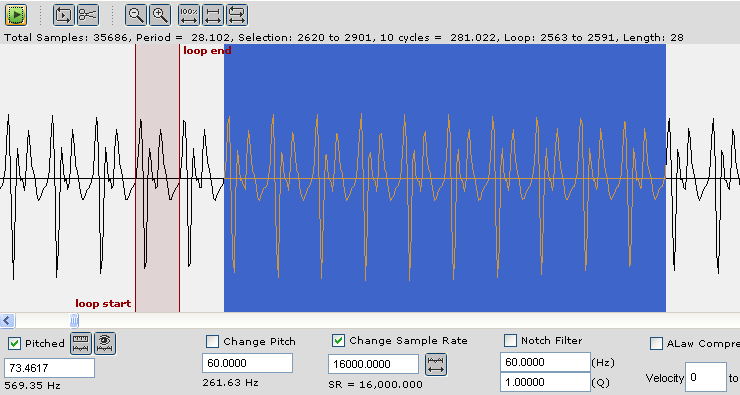

|
|
Mobileer Instrument EditorCONFIDENTIAL and PROPRIETARY - © 2002-6 Mobileer Inc. |
|
|
Mobileer Instrument EditorCONFIDENTIAL and PROPRIETARY - © 2002-6 Mobileer Inc. |
You may be creating wavetables to be played on a synthesizer other than the Mobileer synthesizer. It may not be able to handle arbitrary sample rates or pitches. In that case you may have a problem with the loop not being an integral number of samples.
Suppose that with your current pitch and sample rate that a single cycle is 40.34 samples. If your loop is only one cycle and the fractional part is ignored by the synthesizer then the pitch of the looped sound will be off by 14.65 cents.
14.65 cents = 1200 * log( 40.34 / 40.00 ) / log( 2.0 )
One solution is to make a loop with several cycles and minimize the fractional part. If you combine 3 cycles into a loop then the loop size will be 3 * 40.34 = 121.02 samples. The pitch error in this case will only be 0.29 cents which is not generally detectable. Try to keep the pitch error under 1 cent.
The Mobileer editor provides a tool that will help you minimize pitch errors in loops. When selecting the region to loop simply note the size at the top of the screen. Choose a number of cycles that is as close as possible to an integer.